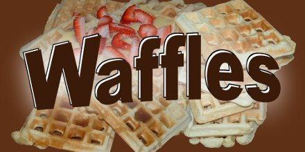
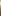

|  |
|
|  | |||||
|
|||||
|
Documentation Change Log Download Forums
Thanks for the generous support from the Neural Networks and Machine Learning Lab at: |
2011-8-25 Added a tool to auto-tune the parameters of supervised learners. Added an app for sparse matrix learning tools. Added an app for dimensionality reduction tools. Added an app for tools that process audio signals. Added BASH command-completion for all of the apps. Added singular-value-decomposition to the sparse matrix class. Improved the performance of our LLE implementation. Added the matrix factorization and nonlinear PCA collaborative filters. Added bagging ensembles of collaborative filters. Added options to print confusion matrices. Added the fuzzy k-means clustering algorithm. Enabled k-means to utilize custom distance metrics. Switch to JSON for our serialization format (instead of TWT). Improved the wizard tool. Merged the GSup and GClasses libraries. Added a random forest class. Added automatic missing-value imputation to supervised learners. Added calibration for all supervised learning algorithms that can predict distributions. 2011-3-17 Added Win64 as a build target. Made all learning models support multi-dimensional labels. Made learning algorithms automatically handle data type-conversion. (It is no longer necessary to wrap them in an appropriate filter.) Improved the wizard tool. (It is now web-based, and provides default values.) Add support to train k-NN with sparse matrices. Significantly improved the documentation. Added some new activation functions. Added a simple machine learning demo. Added LU matrix decomposition. Brought back the jumper demo. Some performance improvements. Added the NeuroPCA algorithm. Improved the way command-line tools display usage information. Added a recommender system command-line tool with a few collaborative filtering algorithms. Added the security demo app. Improved standards compliance. Removed several redundant and not-very-useful classes. Redesigned learning interfaces to be more developer-friendly. Added several new unit tests. 2010-11-5 Fixed issues with OSX compatibility. Added lots of comments to make the API docs more complete. Made GDecisionTree more conformant with the random forest algorithm. Added a recommender system demo. Added a demo for unsupervised back-prop. Updated GNeuralNet to support the dynamic addition and removal of nodes. Also added support for custom activation functions. Added a switch to the learn tool so you can specify which attributes to use for labels, and which attributes to ignore. Threw out GQueue, GAVLTree, and other classes that were redundant with the STL. (Also threw out everything that depended on these classes, such as the path-search algorithms and GRelationalTable. Sorry if you were using those--I think this is good churn, though.) Moved all the classes into a GClasses namespace. Separated all of the classes not related to machine learning into a supplemental library called GSup. (That means you now have to link to two libraries, GClasses and GSup, to get all of my functionality. Again, sorry if this breaks your code, but I think this is good churn.) Renamed the "categorize" filter to "nominaltocat". Improved the plot overview tool wrt nominal features. Made GData::determinant more efficient. Added clarifications to the licenses of the demo apps. Restructured the demo apps to be entirely contained in a single folder. (This makes them easier to clone.) Rewrote GRand to be inherently 64-bit based. Also improved 64-bit compliance with GData, GTwt and other classes. Added a tool for aligning data. Added an uninstall option to the Makefile for Linux. Merged all of the Windows .sln files into a single monolithic solution that builds everything (to simplify testing). Added the hello_console and hello_web demo apps. Rewrote the interpolation demo app to show more interpolation and to support more algorithms. Added random and brute-force optimizers for baseline comparisons. Added a linear programming solver and a linear regression learner. 2010-7-06
2010-6-24 Some cosmetic changes to make the docs and some tools more friendly. 2010-6-11
2010-6-9 Added a graphical wizard tool to help build waffles command-line commands. Added a class for the Extended Kalman Filter. Added a sparse matrix class. Added an automatic attribute-selection tool. Added k-medoids and other clustering algorithms to the transform tool. Added code for converting text documents to sparse matrices. Added some text-mining tools. Added classic multidimensional scaling. Added the Isomap manifold learning algorithm. Added new features to the plot tool and improved how labels are drawn. Added support for missing neighbors in all the manifold learning algorithms. Added a feature to print decision trees. Added a tool for model visualization. Added a class for recurrent neural networks and other recurrent models. Added Backpropagation Through Time, MOSES, and other algorithms for training recurrent models. Enable filters to work in conjunction with incremental learners. Added simulated annealing. Switched to using C++ streams. Strengthened unit tests. Improved some interfaces. Fixed several bugs. 2009-9-27 Added the Locally-Linear Embedding (LLE) to the transform tool and improved the Breadth First Unfolding manifold learning algorithm. Added the Kabsch algorithm for aligning data. Added singular value decomposition to the transform tool. Improved api docs. Further simplified the learning interface. Repaired some regressions with serialization. Added several unit tests. 2009-9-16 Ported to 64-bit Linux. Ported to VC++ 2008. Added classes for hidden Markov Models, equation parsing, intelligent neighbor-finding, drawing random values from various distributions, function plotting, improved algorithms for computing principal components, pruning manifold shortcuts, significance testing, singular value decomposition, kernel machines, Moore-Penrose pseudo-inverse, Dijkstra's algorithm, Floyd Warshall, and Brandes' betweeness centrality. Improved the runtime performance of Manifold Sculpting. Added a tool for generating various datasets. Did a complete interface overhaul. (Yes, this will break your code when you upgrade. That's the price of moving forward.) Improved standards compliance and type safety. Added another transduction algorithm. Added a new demo for a machine learning journal site. improved plotting tools. Added support for measuring transductive accuracy. Dumped some demos that I grew tired of maintaining. Fixed a regression in the naive Bayes algorithm. Added several unit tests. Dumped some dead code. 2009-2-1 Added a script-friendly command-line interface for all of the data mining tools. Converted to standard containers and did a whole lot of clean-up, maintenance, and polishing on the code. 2008-5-5 Models can now be persisted to/from a text-based format. Added incremental kd-tree. Added calibrator. Restructured some interfaces. Added new modelers. Added incremental support to some modelers. Added significance testing. Added chess demo and evolutionary jumper demo. Improved api docs, threw out dead code, and of course fixed a lot of bugs. 2007-11-26 Split the demos into separate apps. Added some Q-learning classes and a couple demos for it. Added several new supervised learning algorithms. Made a few GUI improvements. Redesigned the supervised learning interface to support output distributions instead of just classes or values, and to support semi-supervised learning. Added a semi-supervised learning algorithm. Added some code for Bayesian inference by MCMC using Metropolis and Gibbs sampling. Integrated a better pseudo-random-number-generator. Added code for doing Mixture of Gaussians by expectation maximization. Added code for Self Organizing Map. Added another hill-climbing algorithm. Added support for neural nets to the graphical data mining tool. Fixed 64-bit compatability issues. And fixed a lot of bugs. 2007-04-21 Added a new unified data mining tool that replaces the rank tool, the charting tool, and the predictive accuracy tool. Added confidence estimates to all the learning algorithms. Added a tool to make precision/recall charts. Added a tool for augmenting data sets. Seriously improved the GUI. Added various tools for data mining. Redesigned the GSupervisdedLearner class. Made the charting tools smarter and more capable. Added support to run Waffles experiments on a cluster sans the GUI. Improved error checking, and of course, fixed a bunch of bugs. 2007-01-11 Added some new image processing tools: a max-flow graph cut class, a region ajacency graph class, a video class, methods to compute gradient magnitude images, and a morphing class. Added a K-means clustering class, a couple new learning algorithms, some code for computing eigenvectors, a new tool for ranking learning algorithms, improved the documentation, and fixed many bugs. 2006-09-06 Added a GBag class (for bagging ensembles), Random Forest, Arbitrary Arboretum, and PC Forest. Added some code for computing eigenvectors, an algorithm that computes principle components of data in many dimensions without needing to compute the covariance matrix, and code for generating random vectors (by generating random numbers with a gaussian distribution). Fixed some bugs in A-star search, the KNN algorithm, and the Decision Tree class. 2006-08-03 Added A-star search, a relational table class, made the KNN instance learner work better incrementally, fixed several stability bugs in the socket and HTTP server classses, and added a face-sorting manifold learning demo. 2006-05-25 Added a new clustering algorithm, a discreet path search algorithm, did a good deal of general code clean up, integrated some changes contributed by Roger Pack into various classes, and fixed about ten bugs. Also thanks to Kevin Kemp for getting it to build on Mac without having to include a special framework in the package. I also added some unpolished tools for making charts and added a link to the API docs from the main menu. 2006-03-23 This is a bug fix release. If you were getting a build error in GKeyboard.cpp on Windows, that's fixed now. 2006-03-11 Ported to Mac OSX Tiger. Thanks to Helaman Ferguson for much of this work. It now works on Mac, Linux, and Windows. 2006-02-25 Added a new efficient neighbor-finding class. The KNN algorithm is much faster now. Fixed many bugs. Added a ray-tracing demo. This isn't really related to machine learning, but I have some plans in the future to try combining it with learning algorithms to do model reconstruction. The manifold learning demo demonstrates both unsupervised and semi-supervised manifold learning now. 2005-12-31 Added a particle swarm algorithm and some other search algorithms. Fixed some issues with the genetic algorithm. The Neural Net interpolation demo now compares several search algorithms. (Backprop is the clear winner, but it's not a totally fair comparison because backprop is running in incremental mode while the others are doing batch mode.) 2005-12-17 This is mostly a bug-fixing release. 2005-12-03 Added automated tests for several of the classes. 2005-11-27 The project is now released to the public. It builds in VS6 on Windows and with g++ on Linux. |